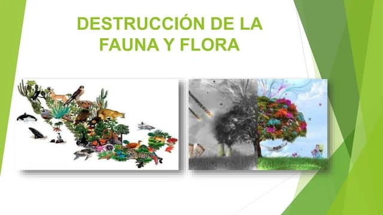

¿Qué es Justicia Verde?
Justicia Verde es una aplicación digital que empodera a los ciudadanos para reportar delitos ambientales como deforestación, contaminación o maltrato animal. Las denuncias pueden ser anónimas y se geolocalizan en un mapa interactivo.
